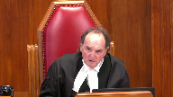

Jason William Cowan, et al. v. Her Majesty the Queen, et al.
This transcript was made with automated artificial intelligence models and its accuracy has not been verified. Review the original webcast here.
Justice Wagner (00:00:26): Good morning.

Be seated.
In the case of Jason William Cowan against Her Majesty the Queen and between Her Majesty the Queen and Jason William Cowan, for the appellant Jason William Cowan, Mr. Thomas Aynes, and for the respondent, Her Majesty the Queen, Puria Tabrizi, we are digging.
Mr. Aynes.
Speaker 1 (00:00:58): Good morning, Chief Justice and Justices.

Thank you.
Broadly speaking, this proceeding revolves around the question who robbed the Regina Subway on July 6th or 7th, 2016.
What we know is that a masked man armed with a knife entered into the Subway restaurant and robbed the sole employee of cash.
Mr. Cowan was tried on those charges in front of the Superior Court judge sitting alone and was acquitted of the robbery and of the offense of having his face masked with the intent to avoid liability.
The Crown appealed the acquittals and in a split decision from the Saskatchewan Court of Appeal, Mr. Cowan now appeals to this court as of right on the basis of the dissent of Justice Jackson.
So in my submission, the appeal as of right revolves around what are essentially differing interpretations of the trial judge’s reasons by the majority judges and the dissenting judge at the Court of Appeal and more specifically about whether the trial judge erred in law in his comments on the party liability section or his analysis there and if the trial judge did commit an error in law, whether the error was material to his acquittal.
And in these types of cases, context is fundamental.
The trial judge’s reasons are to be read as a whole and in the context of the evidence and arguments at trial.
So what I’d propose to do today is take you through some of the context and the evidence to try and show why in my submission, Justice Jackson at the Court of Appeal got it right in that she understood the trial judge’s reasons.
She understood what the trial judge was doing and dismissed the Crown’s appeal from the acquittal.
At trial, the Crown led a substantial amount of evidence of Mr. Cowan’s guilt as the principal robber.
They led evidence that the robber wore shoes that closely matched shoes that Mr. Cowan was later seen wearing by the police.
Mr. Cowan spoke to the police and in his statement to the police, he knew details of the offense which the Crown suggested only the principal robber could have known.
Mr. Cowan provided an alibi to the police, which the Crown then tendered evidence to show was fabricated.
And further, the Crown led evidence in the form of Mr. Cowan’s effectively ex-girlfriend stating that Mr. Cowan had confessed to her that he committed the robbery.
So in terms of assessing the evidence, the Crown went to great lengths to try and show that Mr. Cowan in his statement to the police was a liar.
That Mr. Cowan’s friend who he purported to be with on the night in question proved that Mr. Cowan had fabricated his alibi and then it followed that Mr. Cowan’s denial of the offenses just didn’t ring true.
But at the same time, the Crown advanced what it called its subsidiary argument, that being that if Mr. Cowan was not the principal robber and if the trial judge accepted the clearly fabricated alibi, then the trial judge could seize on to other statements that Mr. Cowan made in his statement to the police in which Mr. Cowan purported to say that he had counseled or told other people at his residence to commit the offense.
And those other people that he told must have then gone on to commit the offense in some way.
So in my submission, the trial judge was alive to this, the Crown subsidiary argument being clearly predicated on the trial judge accepting Mr. Cowan’s alibi is true and further accepting the inculpatory evidence that Mr. Cowan gave in his statement to the police is true.
We’ve highlighted those portions of the Crown submissions at tab three of our condensed book.
And in short, the Crown was arguing two things, saying first, we’ve proved that Mr. Cowan was a liar and that you should convict him as a principal.
But if, the Crown goes on to the trial judge, if this proved liar is to be believed, then you should convict him anyways.
And in my submission, the trial judge’s reasons are responding to that and responding to the defense submissions about who the other individuals put forward as potential robbers could be.
So when we turn to the trial judge’s reasons in this case, I’ve highlighted at tab four of our condensed book, what I submit to be the linchpin of the trial judge’s reasoning, that being the trial judge states at the end of paragraph 42 that the robber might have been Mr. Cowan, but it might not have been, it might have been someone else.
So what we’ve attempted to do in our written submissions that I’d respectfully suggest is much more effectively done by Justice Jackson and the Court of Appeal, is show that the trial judge’s reasons in party analysis are simply not a full explanation about party liability or some of the evidence, but that they’re much more fairly characterized as a slip of the pen, that the trial judge in saying that the Crown has to prove the identity of the principal is a liar, trial judge in saying that the Crown has to prove the identity of the principal offenders instead of just the persons who are involved in the offense is writing out the reasons in a common parlance that trial judges or appeal judges happen to do, and that in the context of
Justice Moldaver (00:08:15): Can you help me out, Mr. Hines?
Sorry to interrupt you, but I just have to be clear.
You just said that the trial judge, in respect of your client being the perpetrator, said he may have been, but I can’t say for sure, right?
How then does the trial judge ever, when he comes to parties, how can he ever be satisfied beyond a reasonable doubt that your client was a party when he has left the doubt in his own mind that he may have been the robber?
It seems to me that his reasoning is skewed here.
All he had to decide was whether Mr. Cowan played some role beyond a reasonable doubt in the robbery.
Even if he couldn’t finally decide, as long as he’s satisfied beyond a reasonable doubt, you were either the robber or you were the party.
That’s it, isn’t it?
Speaker 1 (00:09:11): Potentially, in my respectful submission, Justice Moldaver, I think that in this case it turns on the sufficiency of the evidence that’s actually led and the trial judge is attempting to explain why the evidence is insufficient in both cases to say that the circumstantial evidence respecting Mr. Cowan as a principal offender doesn’t satisfy him, that there aren’t other possibilities, but then turning to party liability saying that the remainder of the evidence that’s there, specifically Mr. Cowan’s statement to the police, also doesn’t satisfy him that he’s a party because he’s not accepting that what Mr. Cowan said in his statement to the police about telling other people was, in fact, true.
So that’s what…
Justice Moldaver (00:10:01): I just come back a little bit and say it’s not as if the tragedy said couldn’t have been mr. Callan because he was a hundred miles away at the time There’s a hundred people that saw him there so therefore the perpetrator theory is absolutely out the window now Let me look at parties because he could still be a party That’s not what he did.
He says you know maybe he was the perpetrator I can’t say for sure one way or the other
And then he comes back to the party liability, and he somehow said
oh But I can be sure he was a party even though he may well have been the principal You just make I’m sorry.
I’m repeating myself.
It makes no sense to me
Speaker 1 (00:10:42): Right.
Well, with respect, Justices, I think you have my point on these, or you have my submissions on this point, and what I submit the trial judge is attempting to do and his reasons.
But even beyond that, when looking at the judgment in terms of the grave line standard, that’s what I think is more central on Mr. Cowan’s appeal, and that the way that the trial judge assesses the evidence, I think Justice Jackson makes the fair point that the trial judge has clearly taken the crown up on their theories of liability.
The trial judge and his reasons clearly states that he finds Mr. Cowan’s alibi to be fabricated, and so then the remainder of his comments the trial judge makes at paragraph 47 of his reasons show how he’s assessing Mr. Cowan’s credibility in his statement to the police, such that he can’t then go on to rely on Mr. Cowan’s statement to show that he’s a party to the offense in some way.
And so when the trial judge’s reasons are assessed in light of the grave line standard, which we’ve referred to at tab A of our condensed book, or tab one of our condensed book, where we’re relying on the dissenting reasons of Chief Justice Green from the Newfoundland Court of Appeal that was subsequently endorsed by this court in an appeal as of right to show that what a reviewing court should be doing is trying to understand the reasons the trial judge had, look at any potential errors that are made, and then make an objective determination based on what the trial judge appeared to be doing, like in a jury case, to try and understand if there’s some reasonable degree of certainty of if you had removed or excised that portion that was wrong, would anything have necessarily changed.
And in our submission, in my submission, that Justice Jackson, again, got this issue right by reviewing the evidence in the case to show that the other individuals that Mr. Cowan speaks about clearly were not accepted by the trial judge as being involved in the robbery.
Several individuals are put forward by the defense.
They include Tara Reagan, the ex-girlfriend, they include Mr. Tone, they include Mr. Fidler, but then defense counsel actually puts in closing submissions that it could have been a different case, and that the defense counsel actually puts in closing submissions that it could have been the individual labeled as a little man and the individual Mr. Tone.
So when the trial judge is speaking to those two individuals, being the ones who committed the robbery, and the way that the trial judge deals with, say, commenting that there’s no evidence about Bradley Robinson, I think from those statements we’d respectfully suggest that the trial judge is not prepared to draw the line that the majority of the Court of Appeal seems to suggest he’s unable to do, that the Crown is really trying to ride two horses in this case, that the Crown, by leading Mr. Cowan’s statement in the way that they did to show that he’s both the principal robber and a party to the robbery, casted significant doubt in the way the trial judge looked at Mr. Cowan’s statement.
So Mr. Cowan might have been incredibly suspicious, but he clearly suffered from significant credibility problems so that the trial judge could not rely on the inculpatory evidence found in his statement to the police to sustain a conviction on the party liability analysis.
So unless there are other questions, I think my submissions on the appeal as a right are going to be quite limited, because really, I think, say, Justice Jackson does a great job in explaining why the appeal should have been dismissed, and we’d ask this Court to endorse her reasons, her dissenting reasons, and allow the appeal as a right by Mr. Cowan and reinstate his acquittal.
Justice Moldaver (00:16:01): I have one quick question.

Do you agree that if any one of the people who were there At the house on whatever it was McDonald Street or whatever it was Committed the robbery any one of them Then your client is a party because It
And let’s just talk about the perpetrator though for a moment.
Although the modus operandi is set out one waits and one goes in
But I mean, I think you would have to agree that it would defy coincidence beyond anybody’s wildest imagination That if the person that did the robbery was not mr. Cowan somehow they were able to quote almost verbatim
What it is that he is alleged in not alleged he in his own statement says it That here’s what I told him and here’s how to do it.
And here’s what to say and so on I mean, so my point is if there was one person in that room That heard this and carried out the robbery According to the plan set out by your client with someone at the door and other people may be driving
But but what the wording would be Isn’t that enough that to find him to be a party?
You don’t have to determine who actually it was of that group so long as there’s one person from that group Who acted on his instructions?
Speaker 1 (00:17:35): write Justice Moldaver, but I do think it has to anchor on your ending comment there that they acted on his instructions.

And at the end of the day, what I submit the trial judge is saying is that he can’t be satisfied on any standard that anyone from the residence acted on Mr. Cowan’s instructions because he just simply doesn’t put any weight on what Mr. Cowan has said to the police in far as his inculpatory statements.
Justice Kasirer (00:18:10): Mr. Hines, could you address paragraph just on that very point, paragraph 44, just what of the trial judgment and what import do you give to the the trial judge’s comment on, and I’m picking up on a little bit on what Justice Moldaver said, on the language used by the principal robber and the statements he made that are virtually identical to the advice Mr. Cowan says he gave to those he claimed to, claims committed it.

It seems to me that reading the judgment as a whole that it’s not entirely plain that the trial judge rejected all of the statement, this portion of the statement, he seems to have taken pretty seriously.
What’s your view on that?
Speaker 1 (00:19:03): Thank you, Justice Kasair.
My read of paragraph 44 of the trial judge’s reasons sits closer to Justice Jackson’s read of it, which is that at this point, the trial judge is turning to the party liability analysis, summarizing the Crown’s sort of argument there, and then highlighting some of the evidence in that respect.
Now, whether it’s explicit findings of fact and accepting the evidence, I think if you go on to look at paragraph 45 of the trial judge’s reasons, where the trial judge is saying that the problem with the Crown’s position in this respect is, well, and so on.
So I’d suggest that reading from paragraph 43, 44, 45, the trial judge isn’t making explicit findings of fact, accepting Mr. Cowan’s evidence, but summarizing the Crown’s theory, and then goes on to deal with that theory.
Justice Kasirer (00:20:17): I suspect the Crown’s going to say at 45, um, there’s an instance of where the judge made the error in law picked up by the majority of the Court of Appeal pointing to the requirement that Tone and Littleman be, be shown to be the principals.

But it, it doesn’t speak to the fact that a portion of the statement was thought by the judge to be credible.
Speaker 1 (00:20:50): Well I think you read that then also in light of if you go on to paragraph 46 of the trial judge’s reasons at that point you have the trial judge begin to actually comment on some other specifics of Mr Cowan’s statement like at the end of paragraph 46 that Mr Cowan appeared confused and no evidence exists respecting Bradley and then on to paragraph 47 which I say is again one of the important paragraphs of the trial judge’s reasons where he says that he finds Mr Cowan to be a person of unsavory character, his statement is full of inconsistencies and contradictions, his alibi is clearly fabricated and so reading it in that sequence I disagree with the assertion that the trial judge really placed any weight on anything that Mr Cowan said it in a statement to the court.
Justice Moldaver (00:21:51): Well, with respect, the trial judge went around the mulberry bush ten times then on what could have been a one-line endorsement on this, which is just to say, I do not believe Mr. Cowan when he says that he instructed these people.
End of game. Over.
He had no participation in this.
Why is the trial judge going on and on and on?
Who did the robbery?
Who did this?
When it would have been as simple, I reject that.
I find that he’s, I cannot find credible his statement that is, by the way, a statement against interest, but his statement that he instructed these people to do that.
And by the way as well, it kind of helps him in his own way.
He may not have known it at the time, but it kind of gets him out from being the perpetrator and the whole nexus of the running shoes and so on.
But my real question is, do you agree that if in fact you’re right, the trial judge could have done a one-liner on this with a little bit of explanation as to why he doesn’t believe a word this man says?
Speaker 1 (00:23:01): Right.

He certainly could have done that.
That would have made my job a lot easier in this case.
But in terms of the appellate standard of review and trying to understand the trial judge’s reasoning, in my submission, the way that the trial judge deals with the party liability analysis, while it’s not a one-liner, I respectfully submit that that’s his point that he’s trying to make.
Justice Brown (00:23:28): I mean, we’re constantly told not to parse trial judges’ reasons, aren’t we?

I mean, I’m reminded of this constantly by my colleagues when I’m in dissent and they’re trying to sustain a conviction.
It seems to me that that standard ought also to apply when the issue at stake is whether to uphold an acquittal.
Speaker 1 (00:23:56): Thank you, Justice Brown.

It does, and in fact, I think given the heavy burden that’s on the Crown with respect to Crown appeals from acquittals of indictable offences, we could almost suggest to you that it’s an even just as well, if not a more onerous standard to say that the acquittals are not lightly overturned.
Appeal courts are trying to understand the trial judge’s reasons, not parsing them for individual errors in where things come out, because the trial judge is trying to speak to the parties in a judge sitting alone case to try and say, here’s the conclusion that I come to.
You’ve tried to use this statement in two different ways, and as a result of it, I find reasonable doubt in both of your theories because of the way that you’ve presented the evidence in this case and the way that you’ve framed Mr. Cowan’s statement that had clear impacts on how the trial judge assessed the evidence.
What I’d like to do, barring further questions, I’ll of course go wherever the court would like me to address, but I propose to turn to the Crown’s appeal by leave.
In this case, what we’re asking is if this court dismisses Mr. Cowan’s appeal as of right, that we’re asking the court to also dismiss the Crown’s appeal by leave.
The majority of the Court of Appeal ordered a new trial limited to the party liability theory because of what it considered to be a material error in law and the trial judge’s analysis.
When doing so, they didn’t explicitly state why they were ordering a limited new trial, other than to say, given that we’ve dismissed the Crown’s arguments with respect to the principle theory that the new trial will proceed from the footing as if Mr. Cowan is guilty as a party.
In our submission, I think it’s agreed that the power for the Court of Appeal to do that and make that limiting order came from Section 686 sub 8 of the Criminal Code.
In my submission, it was an appropriate exercise of that Criminal Code power.
I’ll take you through the different steps as to why that was the case. Okay.
Starting.
Justice Côté (00:26:37): Can you explain your view about the crown argument and the use of the case of the queen against Mekhi?
Because you say that it’s not relevant to this case, but I would like to know why it is not relevant to this case.
Speaker 1 (00:26:52): It’s not so much that it’s not relevant, Justice Cote, but I think it’s factually distinguishable because it involves a jury.
In my view, the McKay case doesn’t stand for the broad proposition that when there’s a single count offense and there’s a material error that you have to send it all back.
But in terms of getting to what I will say is the main issue in this case and whether justice required a limited new trial, that I’ll get into how it evokes principles of prejudice and fairness that weren’t resolved in the McKay case or could not have been resolved in the McKay case because it was a jury trial.
And so I’m relying on fairness principles that underlie issuance stoppable.
And when looking at the issues in this case framed as starting issue number one was Mr. Cowan proved to be the principal robber, that’s an issue that’s conclusively resolved in his favor where the McKay case, given that it was a jury, given that it was a trial and appeal proceedings that all predated the Mahalingan case and the Pankow case out of this court that McKay is not a bar to ordering a limited new trial in the right circumstances, which I say that this was.
So in terms of going through the steps of section 686 sub 8 analysis, this court recently had the opportunity to summarize those in the RV decision just from earlier this year.
I think it’s fairly plain that the section 686 was invoked in this case because the majority of the Court of Appeal overturned the acquittal that was invoking a power under section 686.
And then on the second step of that analysis, the order for a limited new trial wasn’t at direct variance with that order because of the broad ancillary nature of the section 686 power, that it’s really got nothing to do with overturning and not overturning reasons as the Crown seems to be suggesting here, that what actually happens is Mr. Cowan is placed back in a position of presumptive innocence.
A limited new trial would be consistent with that or would not be at direct variance of that.
And further, to the extent that this court in 2012 in the Belushi case upheld a continuation of a trial where a state of proceedings was lifted, I think we can reason by analogy that a limited new trial can be appropriate as long as it’s what justice requires in a particular case.
So really what this court should be looking at and what the disagreement between the parties should be is that what justice requires component.
Justice Moldaver (00:30:11): Well, sorry, 686 was in, was available to Justice Charron.

In fact, it seems to me the facts in McKay are even more dramatic here.
Because in McKay, the jury was only given one provision, one way, one way of committing this crime.
They obviously had a reasonable doubt about it, that he used actual violence and they acquitted.
It was never even, they were never even given the opportunity to consider the threat provision.
So it’s as clear as a bell that this jury had a reasonable doubt that Mr. McKay is not guilty because he did not engage in actual violence.
So if there was ever a case that he should be let go on for fairness reasons, because the error was not putting the other way that this crime could be committed to the jury, I would have thought McKay would be a classic case.
Jury or not jury, I think the jury thing is a red herring here because it’s one of those cases like in RV, but this is even clearer.
We know what the jury did and why they acquitted.
So now Justice Charron, on behalf of this court, says no, no, it’s got to go back on everything.
And one could understand maybe that the Brunswick Court of Appeal, they’re saying, well, no, we don’t think it should go back on anything because the only thing that’s missing here was the second way that this crime could be committed.
So what we’ll kind of, even though we are setting aside the acquittal, we’re going to give them a partial acquittal, you know, on the section A.
That’s what this leads to.
I’m sorry, that’s a long way to get around to say to you, I don’t think McKay is distinguishable at all.
In fact, I think it’s more pronounced than this case.
Here, the trial judge looked at parties.
He just messed up the law on parties according to the majority.
So it’s as if he didn’t look at it and as a result, they ordered a new trial.
So maybe you can help me.
You just say, well, it was a jury trial on McKay.
I need some help as to why that matters.
Speaker 1 (00:32:22): Okay, well, Justice Moldaver and Justices, what I take you to is in terms of issues of fairness, we’re relying on the Mahalingan case and I take you to tab seven of our condensed book just to show you the statements of law that we’re relying on for issue of estoppel to apply and reading the Chief Justice’s reasons.
Overlapping speakers (00:32:58): Hey.
Speaker 1 (00:32:58): in Mahalingan, we suggest or I suggest that they apply more pronouncedly than the McKay case,

that in a one-issue trial, or at least in Mr. Cowan’s trial, the one issue of the first issue of is he the principal robber, that was resolved in his favor on the basis of reasonable doubt and we’re able to clearly see from the trial judge’s reasons how he got there.
Whether, say at paragraph 24 of Mahalingan, there’s a more complex multi-issue trial or reading into Punco, whether a jury is involved, that may not be the case, but looking at Mahalingan, we say those statements apply, that the trial judge assessed Mr. Cowan’s liability as the principal robber, made a clear finding of fact on the basis of reasonable doubt that Mr. Cowan was not the robber because he had a reasonable doubt about that and so when the Court of Appeal was ordering a new trial, they could effectively say it would be unfair to send Mr. Cowan back for a new trial on this theory of liability that had been conclusively resolved in his favor.
To the extent that McKay, the McKay case is short, it involves just a few paragraphs as to why the new trial should be a broad new trial.
I don’t read them as being necessarily inconsistent given that Justice Charron doesn’t speak about section 686 sub 8, but in this case, I think we can take from this Court’s jurisprudence from after McKay to say that issue a stoppable as a principle of fairness to the parties can apply and just like in the RV case where this court indicated that one of the reasons for instituting a state proceedings was to preempt an abuse of process application at a new trial.
Justice Brown (00:35:34): So, Mahalingan establishes that issue estoppel can apply, but then there’s the question of whether it should apply here, because in Mahalingan, Chief Justice McLaughlin explained that there is a certain procedure to follow when you raise the issue of, raising the issue of estoppel, and that raises the question of whether the majority at the Court of Appeal handled this particularly well, and whether it is proper to say without submissions, and without following that procedure that the Chief Justice described, that they’re limiting the retrial, and they give no reasons.

So, there’s the issue of whether they can do this, and we have your submission on that point, but there’s also the issue of whether they did it in the correct way here, and I’d like to know your views on that.
Speaker 1 (00:36:41): Right.
Justice Brown, on that point, I’d say there’s no unfairness to the Crown in this circumstance because they were able to put forward on appeal the arguments about Mr. Cowan as a party, or sorry, a principal, and deciding those arguments from the bench and dismissing the Crown’s arguments in that respect meant that the Crown’s case against Mr. Cowan as a principal came to a conclusion that
Overlapping speakers (00:37:22): Thank you so much.
Speaker 1 (00:37:22): There should have been further submissions about what a new trial should have looked like.

I think doesn’t go beyond the scope of say, what an appeal court can do in terms of Mian and the procedure steps set out in Mahalingan that the court of appeal is entertaining two different arguments from the crown about different reasons to overturn Mr. Cowan’s acquittal.
That they had those submissions decided against the crown on the first issue, the principal liability issue.
And so then could say, well, if we’re resolving this on the basis of party liability, we’re going to order a new trial, but that new trial is going to be limited for this purpose.
Overlapping speakers (00:38:17): You
Speaker 1 (00:38:17): I think that’s not an error in this case.
Justice Moldaver (00:38:22): Would it be open for your client on the new trial to take the stand or call people on his behalf or both to get up there and say, yeah, you know what, I was the actual robber.
First trial judge got this wrong.
I was the actual robber and he’s got two other people that would confirm this somehow.
And the trial judge, the new trier of facts says, you know what, I have a reasonable doubt, you know, about this.
I’m satisfied you were the robber based on what you’ve told me or at least I have a doubt on my mind that you may have been the robber and as a result, I’m going to quit you on this because we’ve been told we can’t look at the party.
We can only look at the parties.
And by the way, in that context, in the interest of justice, the crown of course could not lead anything to show that he was the original robber because it would be irrelevant.
So just help me out.
How does that further the interest of justice where the accused potentially will be acquitted by admitting that he was the robber?
Speaker 1 (00:39:30): On that point, I agree, the evidence at the new trial could well be different.
Overlapping speakers (00:39:40): Excuse me, Mr. Cowan.
Justice Moldaver (00:39:41): What do you mean different?
The Crown couldn’t lead it.
The Crown couldn’t lead any evidence about that he was the robber.
They’re restricted.
You’d be up in a second saying this is irrelevant.
Overlapping speakers (00:39:52): Tell me.
Justice Moldaver (00:39:53): apart from the accused saying full answer in defense, how could it be different?
Speaker 1 (00:39:58): Well, defense evidence would be the point, and I agree with your comments on that, but I’d still suggest that that would be a dangerous road to take, given that the Crown could advance effectively a new theory in that case to say Mr. Cowan is guilty as an aider to the party by being the principal.

There’s the individual holding the door, and that would be at Mr. Cowan’s peril to advance that sort of defense.
Ultimately, I think, Justice Moldaver, your comments sort of speaks to the truth-seeking function of the court, and at the end of the day, in a case like this, where we have the trial judge’s findings of fact and what the trial judge said and reasoned, we agree with the majorities of the Court of Appeals, and I think that’s a very good point.
Speaker 1 (00:41:11): decision to limit the order to a new trial because that would be consistent with the fact that the Crown’s appeal of the acquittal on the principal liability was dismissed, that it would respect the finality of the trial judge’s acquittal on the basis of principal liability and his reasonable doubt there, and that those circumstances shouldn’t be set aside because of something that happened with respect to the trial judge’s analysis on party liability.

Justice Kasirer (00:41:54): Mr. Hines, can I go back to your image at the beginning of your pleading about the crown advancing a two-horse theory here?
And I’m wondering if the better way to look at it is the crown actually advanced a one-horse theory with two different ways to ride the horse.
And that what you’re proposing to us now is an ancillary order at variance with the court’s underlying judgment.
That the law focuses on the verdict on this single-count offense and doesn’t concern itself at this stage as to how it was, how the horse was ridden, how the crime was committed.
Have I got that wrong?
Speaker 1 (00:42:42): I wouldn’t agree with you on that point, Justice Kasaira.

On the direct variance portion, I’d look to the majority decision in the ROV case about what might be at direct variance under section 686 sub eight of the criminal code.
And the direct variance in this case, like in the ROV case, would be setting aside an acquittal and ordering a new trial.
But like in the Belushi case, where the new trial is a continuation of that trial, that a limited new trial is not at direct variance with the underlying judgment there.
So I don’t think it’s an issue on the second step of the section 686 analysis.
It’s really whether there’s agreement or not with whether the limited new trial was what justice required in this case or not.
Justice Wagner (00:43:42): Can I ask you a question, sir?

Just to go back to Mahalingan case, paragraph 24, we refer to a one-issue trial.
For you, what does that mean, the issue?
Is that the offense?
Is that a crime?
Or does that mean something else?
Speaker 1 (00:44:03): Well an issue is an issue Chief Justice.

It could be one issue within the scope of the trial and in this case identity was a main issue.
It was not the only issue but it was a focal issue which is something that I’m submitting that the trial judge’s reasons stand on that the issue at the first instance was is Mr. Cowan the robber and the trial judge said I can’t conclude that he was.
The Court of Appeal said we’re not going to interfere with that analysis and so ordering a new trial for the Crown to retry that issue of whether Mr. Cowan was the robber would be unfair in these circumstances and that’s why the the limited order should stand.
Justice Rowe (00:45:05): I think the crown is advocating a commendable memo, a motto, actually.
If at first you don’t succeed, try, try again.
Speaker 1 (00:45:20): I agree, and I’d add to that, Justice Roe, that in terms of the Crown’s theory about who the robber is, I think the application for leave and requesting a full new trial shows just how stridently they think that Mr. Cowan is in fact the main robber here, and so the Court of Appeal and the trial judge were alive to that and said, look, finality prevails, you’ve had your chances, and so a new trial has to proceed on this limitless basis, and I think that’s appropriate in these circumstances.
Justice Brown (00:45:56): I wonder if, just pulling you back to the Chief Justice’s question about paragraph 24 of Maalingan, I’m wondering if the reference further down in that paragraph to the acquittal having been based on only one factual issue informs the response to his question.

Do you think it does, and if so, how?
Speaker 1 (00:46:18): I do, if you could, Justice Brown, even go on to paragraph 25 of Mahalingan, where you can see it may not be clear that the relevant issue was resolved in the accused favour on the first trial.
That issue being Mr. Cowan’s liability as the principal robber was conclusively established.
We can see that from the trial judge’s reasons that he clearly pronounced he had a reasonable doubt about whether Mr. Cowan was the robber, and that on the basis of reasonable doubt and the way that Mahalingan says courts can interpret reasonable doubt as conclusive findings of fact, that means that the trial judge has conclusively found as a fact that Mr. Cowan was not the robber.
Indeed, if you go to…
Justice Brown (00:47:06): If you go to the conclusion of paragraph 26, that kind of, it may seal the deal on that point.
If the issue was decided in the earlier proceeding but the Crown does not seem to use the evidence to contradict the factual finding on that issue at the previous trial. Right.
Speaker 1 (00:47:22): I agree with that.
So justices, if I could, in conclusion, just summarize my submissions on both appeals.
We’re asking this court to endorse the dissenting reasons of Justice Jackson and allow Mr. Cowan’s appeal.
But if the court does not do that, then we’re asking the court to dismiss the Crown’s appeal by leave and leave the limiting order for the new trial in place.
Justice Wagner (00:48:01): The Court will take its morning break.

15 minutes.
The Court will take its morning break.
Speaker 2 (00:49:12): Mr. Chief Justice, and may it please the Court, in R.N. Thatcher, this Court found that where there is evidence the crime was committed on behalf of an accused person’s behalf, the accused person may be found guilty for being a party to that offense, even if the identity of other participants is unknown, and even if the precise role played by each participant is uncertain.
In the case of Mr. Cowan, the trial judge entered an acquittal, because the actual perpetrator could not be identified with certainty.
The decision was incorrect, contrary to this Court’s decision in Thatcher, and Mr. Cowan’s appeal as of right should be dismissed.
Now, many of the arguments advanced by Mr. Cowan, and indeed many of the reasons offered by the dissenting opinion, center on the trial judge’s specific use of terminology.
Did the trial judge really mean principal offender when he said principal offender, or the trial judge’s choice of prime candidates for the robbery, Matthew Tone and Littleman?
And we agree with Justice Moldaver’s earlier remark that if anybody from the group was involved, that was the critical issue, not these particular people.
In our factum, we’ve responded to these arguments, and I’m sure I’ll do so again today, but it’s important to be clear that these arguments sidestepped the main legal principle that was violated in the trial decision, and that was the principle affirmed in Thatcher, that there was no burden on the Crown to point to a specific identified individual as the actual perpetrator.
Now, it’s simply not the case that the trial judge was dissatisfied as to whether there was a connection between Mr. Cowan’s advice and the crime.
And here I would like to turn to a paragraph we’ve already discussed this morning, and that’s paragraph 44 and 45 of the trial judgment.
We’ve reproduced these paragraphs in our tab eight of our condensed materials.
I won’t read the entire paragraph, but I’ll highlight three essential observations or findings in paragraph 44.
Trial judge said that Mr. Cowan, quote, clearly admits he told others how to do the crime.
The evidence showed Mr. Cowan’s instructions, quote, very closely compared to how the robbery was carried out.
And lastly, the language used by the principal robber was, quoting again, virtually identical to the advice Mr. Cowan gave to his friends.
The problem was never the connection between Mr. Cowan’s instructions and the crime.
The problem is defined in those very terms in the next paragraph.
And yes, that is the legal error.
Next paragraph, the judge says the problem is that there was not sufficient evidence that Matthew Tone and Little Man were involved in committing this offense.
This was an unnecessary legal criterion.
The identity or precise role of other participants did not need to be determined.
This shifted the focus of the trial judge from the undeniable connection between Mr. Cowan’s instructions and the robbery to who was behind the mask or did Tone and Little Man do it?
And this derailed the proper course of the legal analysis that really started in paragraph 44 and directly resulted in the acquittal.
The verdict would not necessarily have been the same if this error had not occurred or if the trial judge had not been sidetracked in this way.
Now, the connection was never a realistic issue in this trial.
I mean, paragraph 44 is written in strong language, but the judge could have gone a lot further.
The specific knowledge of Mr. Cowan was incredible.
I mean, he knew the robbers, for instance, had dropped the butcher knife as they were running away.
And of course, the knife was recovered by the canine units just around the corner.
He witnessed a coin dispenser that was stolen from the subway restaurant right after the right after the robbery.
The timing is important here.
There is there is there’s the issue of shoes.
He looks during his video police statement to the footage or pictures from the footage from from the subway robbery and says, those are my shoes, but I’m not the only person who wears those shoes in this manner.
I don’t keep those shoes under lock and key.
My friends must have picked them up and framed me for this.
The connection was undeniable, but this evidence that I’ve outlined here never got a fair hearing at this trial because even though the judge paid some homage to the strength of this evidence in paragraph 44, instead of appreciating the legal significance of this evidence, the judge quickly focused on the question that didn’t need to be determined.
In terms of.
Overlapping speakers (00:54:43): Excuse me, may I-
Speaker 2 (00:54:45): submissions this morning, and indeed in his written material, focused on whether, in terms of the grave line test, and whether the evidence of Mr. Cowan was rejected by the trial judge.
What we submitted was not rejected.
Justice Wagner (00:55:05): Excuse me, sir.
I think my colleague Dr. Martin has a question for you.
Yes, thank you very much.
Justice Martin (00:55:10): But I have something that I’d like you to comment on.
The trial judge arguably, and you do argue it, made an error in terms of referring to Mr. Tone and Little Man requiring them to be a principal.
And then in paragraph 45, the trial judge also talks about them being persons involved in committing this robbery, all right?
So to me, there’s a little bit of, you know, we know that it would be an error to just look at them as principals, but where I’d like to sort of ask you to give me some assistance is let’s assume then that it is an error of law, but the question is, was that an error of law that was made here on these reasons?
And as I go through it, and as I’m going, let’s say that the, when we look at the entire record, even if that error was made, is it a serious error when we look at saying there’s four people that Mr. Cohen says are involved?
Other than his statement, there’s very little other evidence that would connect them.
So don’t, you know, you said that we would have to prove that one of the group acted as someone who did the robbery regardless of whether they were principals or parties.
You remember saying that?
And I guess what I’m saying here is at the end of the day, the trial judge seems to say I can’t accept Mr. Cohen’s evidence, and what other evidence is there that would allow us to say that there is a significant error here on this record in terms of proving one member of the group, as you say, was at all involved in this robbery?
That’s my question.
Speaker 2 (00:57:23): Yes, there were many parts to that question.
I’ll hopefully address some of the main points raised.
One of the issues is, yes, in paragraph 45, a more general language is used.
But in paragraphs 48 and 49, which we have to read, again, the entire trial decision in its context, the more specific language is used, and pretty strong language.
In 48, the trial judge says Matthew Tone and Littleman were involved as principals in the commission of this offense.
And again, 49, Matthew Tone and Littleman who participated as principals in the commission of this offense.
The judge isn’t simply picking a catch-all firm.
It appears pretty clear here that he is choosing his terms very carefully.
In terms of what sort of evidence we needed in terms of who committed this crime, if I may answer that question in relation to Thatcher.
I mean, in Thatcher, the person who actually committed the murder was not really known.
There was some evidence that the killing could have been done on behalf of Mr. Thatcher.
That was enough for section 21 instructions to be left with a jury.
It was in that context that this court said, there is no burden on the crown to point to a specific identified individual as the personal assailant of the victim.
I mean, compared to that evidence, and I’ll come back and I appreciate Justice Martin that part of your question is premised on what do we accept from this statement and what else do we have?
So I’ll get to that right after I make this one point.
In terms of other people that the trial judge didn’t consider, I mean, Mr. Robinson was identified by Mr. Cowan as the prime candidate.
We’ve reproduced portions of the police statement in our material.
Again, I won’t go through it.
This is tab five of our condensed material, but it is quite striking.
I mean, Mr. Cowan during his statement says, initially he’s either not remembering or not divulging the identity of Mr. Robinson.
He starts by saying there was a guy who has the same height and weight profile as me, and it was one of Matthew Tone’s friends.
He then looks at the picture from the robbery and says that’s the jacket he was wearing when he left.
He goes on Mr. Tone’s Facebook.
He’s using the officer’s cell phone to access Facebook.
Goes on Matthew Tone’s Facebook, goes through his friends and identifies Bradley Robinson and tells the officer this is the guy.
When he gets back to the house, when Mr. Cowan does, he says Mr. Robinson was there and grabbing his share of money.
He identifies Mr. Robinson as being part of the audience to whom Mr. Cowan gave instructions.
And he ends the statement by clearly saying the guy at the door is little man.
The other guy is Bradley.
Dustin and Matthew Tone are in the car.
Compared to Thatcher, where we didn’t even have a suspect, we have a storehouse of information available here.
We have a suspect identified by Mr. Cowan.
We have Mr. Cowan’s instructions that he admits he gave to this man.
And we have the trial judge finding that the crime was committed just as Mr. Cowan instructed it should.
There was no burden on the crown to prove Mr. Robinson’s existence.
Now, in terms of the foundation for the evidence, and where is the crown getting its evidence from?
Yes, our position is that the statement of Mr. Cowan was not rejected by the trial judge for three essential reasons.
First, as the majority judges point out in this decision at the Court of Appeal, the judge never said he completely rejected the evidence.
Second reason is that the trial judge relied on this statement to say Mr. Cowan’s instructions matched the crime.
Third reason is that under the principal liability theory, the trial judge actually relied on this statement to say that others from the house, including Matthew Tone and Little Man, could have committed the crime.
So he relied on the statement in order to say there was this other reasonable possibility.
So obviously, the judge is.
Justice Martin (01:02:14): Excuse me, isn’t that a function of the rules around circumstantial evidence, that last point that you make?
And because the trial judge here makes a very strong statement that Mr. Cowan is an unsavory witness, and while I understand that what Mr. Cowan has said may qualify as an admission against interest on the party liability side, nevertheless, it has to be accepted and relied upon for it to have any probative value.
And I guess once you discount someone as an unsavory witness, and there’s alternative explanations for numbers one to three here, what would we be left with about proving that one of those four people in the group actually participated in the robbery?
Speaker 2 (01:03:06): we would be left with.
Again, I mean, there’s certain aspects of the statements that I think we can reliably say that the judge is relying on.
Or at the very least, we’ve got a set of narrative by Mr. Cowan describing this particular offense being committed.
Again, I went through the details in terms of the butcher knife being left behind and so forth.
And then we’ve got another body of evidence coming from Mr. Patel, coming from the Subway restaurant footage that says these two match very closely.
I appreciate that the first statement on the principal liability theory was, I mean, rules of circumstantial evidence apply.
But at least it was enough to give rise to a reasonable possibility that the judge was prepared to accept.
And that was the alternative that he identified, that Matthew Tone or Little Man could have done it.
And as we have argued, that itself was a legal error.
I mean, under Section 21.1, the judge couldn’t have said, well, I have a reasonable doubt that Mr. Cowan committed in this way because Matthew Tone or Little Man could have done it.
So it quits Mr. Cowan on that basis, but then has a reasonable doubt on another way he could have committed the offense.
We agree with Justice Moldaver.
All that was required was for the trial judge to say, I can’t really determine how he did it.
He either did it this way or that way.
That is the entire purpose behind Section 21.1.
Justice Rowe (01:05:03): To be a little blunt about this, you seem to be saying to us there was plenty of evidence, the trial judge should have convicted, so let’s go back and do it again.
Speaker 2 (01:05:19): Justice Roe it is true that the remedy that we had sought at the Court of Appeal was a conviction.
Right now we are arguing that we are arguing against the appeal as a fright and we say yes there should be a new trial on this and the majority judges deal with some of the issues that would have stopped the complete trial.
What we are saying is that and yes to a certain degree we agree with the majority judgment there was very strong evidence here but going back to one of the points I raised earlier our position is that the strong evidence never got a fair hearing because the correct legal framework was not applied to this body of evidence.
Instead the trial judge focused on something that was unnecessary and acquitted on that very basis.
Those are all the comments that I have to make with regards to the appeal as a fright.
In terms of the appeal by leave unless there are any questions of course from the panel.
Go ahead please.
Thank you.
The majority judges of the Court of Appeal reviewed the trial judgment under two different headings.
Principal liability analysis and party liability analysis.
Under the principal liability analysis majority judges did not review the judgment for errors.
They simply said that even if there were errors they would not have affected the verdict under the grave line test.
They didn’t explain why this was the case they simply announced a conclusion.
When they ultimately ordered a new trial they restricted it to party liability only.
Again they didn’t refer to any legal principles or statutory provisions that justified doing so.
This was in error.
It treated modes of committing an offense as if they were discrete offenses in themselves or as as if they were distinct verdicts in themselves that could be severed and set aside.
This was contrary to this court’s decision in McKay which we submit is dispositive of this issue.
In McKay of course the New Brunswick Court of Appeal had found that the definition of assault one way an assault could have been committed by attempts or threats should also have been put to the jury on on top of something that Mr. McKay received an acquittal on assault by actual force.
The Court of Appeal believed that Mr. McKay was entitled to have his acquittal shielded from incursion but this court disagreed because various ways various definitions of assault did not create a separate offense.
They defined different ways of committing the same offense.
To borrow the metaphor from earlier this morning there are two ways of riding the same horse both McKay and Thatcher certainly confirm that metaphor or that way of seeing how these two definitions function.
Once the Court of Appeal in this court’s opinion in McKay once the Court of Appeal decided that the verdict would not have necessarily been the same the only option was to order an unrestricted trial.
Now my friend argues that the jury context is important here and he does this really in the context of issue stoppable that and we agree Chief Justice that it really comes down to what the issue is and my friend identifies the general principle but he doesn’t really tell us what issue would have been problematic in McKay.
He relies on this court’s jurisprudence in Pankow for instance and argues that in a jury setting it is sometimes hard to determine whether an issue has been decided in a litigant’s favor.
All we have is a bare verdict importantly well let me backtrack a little bit here.
In McKay the contentious issue that was subject to relitigation was whether Mr. McKay was guilty of assault by applying actual force which in turn raised the question of whether that issue had been decided in his favor.
There was no need to look behind the bare verdict the verdict provided a complete answer to that question and the this issue was completely decided in Mr. McKay’s favor that’s why the New Brunswick Court of Appeal didn’t want to send the matter back they thought Mr. McKay was entitled to keep his favorable judgment on that question.
The only reason this issue needed to be completely redone completely redone on a second trial in McKay was that the first jury hadn’t hadn’t considered a completely different theory an additional definition of assault and yes going back again to some of the comments made earlier this morning by by Justice Moldaver this argument
the arguments that my frame my friend is making would have had a much higher claim much higher claim in McKay or the motto that if you don’t succeed try try again again that concept would have had a much higher claim in McKay but the entire analysis that the jury had already done in Mr. McKay’s favor had to be redone completely because the jury hadn’t considered a different theory.
I think my friend this morning pointed out that McKay was decided before Mahalingan that to us doesn’t distinguish it
either I mean this court in Mahalingan was really clarifying the law going back on this court’s decision 1985 decision in Gurdik and and really focusing on that particular decision and deciding whether issue stop all continued to have utility in the criminal law context it wasn’t as if Mahalingan introduced an entirely new concept of issue stop all into the discourse.
The other important issue is issue stop all in our submission issue stop all doesn’t doesn’t apply in this case but but even more basically issue stop all cannot create a power that does not exist in the criminal code.
The powers of a court of appeal are statutory and the majority judges order exceeded the powers available under 686-4.
The majority judges we’ve read
Justice Brown (01:12:35): We’ve read 686-4 quite generously, most recently in RV.
This seems to be hardly a stretch relative to some of the readings we’ve given.
Speaker 2 (01:12:47): In RV or other cases like Belusky, Yelly, that my friend relies on, none of those cases involve a retrial on a single count offense on an issue integral to guilt or innocence.
Justice Brown (01:13:08): I agree.
The question is whether that matters, whether that’s legally significant.
The mere fact that it’s a distinction doesn’t persuade me, so I’m just signaling to you, you have to do a little more.
Speaker 2 (01:13:20): that I appreciate that, Justice Brown, that the
Overlapping speakers (01:13:24): There’s a reason why in this.
Sorry, I’m just joking.
You probably don’t appreciate it, but.
Speaker 2 (01:13:30): One reason it becomes relevant is because here, what can be done and what can be severed is really governed by other jurisprudence, such as Thatcher and such as McKay, that look at issues where there is party liability issues or whether it’s about different definitions of assault as things that can’t be severed, as parts of the same whole, as an issue that’s integral to the very issue of guilt or innocence.

And under 686-4, all the Court of Appeal could have done was to set aside a verdict.
And under 680, it couldn’t set aside constituent parts of the verdict.
And that is what my friend is really arguing can be done here.
That we can sever or bifurcate an integral issue to guilt or innocence, and then have the matter sent back for retrial as if it was a subsidiary error correction mechanism as opposed to a new trial.
And 686-4 is very clear that what the Court of Appeal can do is to order a new trial.
Justice Moldaver (01:15:00): I guess your point to Justice Brown is that in RV we made it clear that an ancillary order can’t be in variance with the main order.

The main order here is that this trial effectively was a nullity.
The acquittal has to be set aside and I know of no authority in this country that says but we’re going to give you a partial acquittal because one of the ways the offences could be committed was found in your favour.
I’ve never heard of that.
In fact, if you could help me out, is there any authority that says on a retrial that that is kind of the two proceedings we need to even engage this issue with Staple?
I guess I’m asking you because I look at the issue of Staple cases.
From what I’ve seen, there’s always two separate proceedings.
Mahalingam is a classic example.
Two separate proceedings.
I don’t know.
I think Punkett was the same and, you know, I just I’ve never heard of this where you have a retrial being considered a separate and distinct proceeding when the court orders a new trial.
In fact, I just don’t see it as being that.
Justice Rowe (01:16:18): Well, I may be able to help out on that one in framing the following question.
While Barton involved two separate offenses, murder and manslaughter, we basically said that the accused was not to be placed in jeopardy again on one theory of criminal liability, but was to be placed in jeopardy again on a different theory of criminal liability.
I understand that they’re two different charges.
It just seems to me that there’s an underlying principle here that was implicit in Barton and that you’re calling upon us to ignore now.
Speaker 2 (01:17:10): If I may answer Justice Roe’s question before I forget it, and then I’ll come back to Justice Moldaver’s question.

I must admit, Justice Roe, I’m not familiar with that particular issue in that case, but I’m going to answer it on the basis that the new trial was murder-manslaughter.
Actually, that fact pattern is also presented in one of the cases that we cited, and that was the case of Druken.
If it’s murder or manslaughter, what you’re dealing with is a separate included offense, as opposed to something that is integral to guilt or innocence.
That to us distinguishes the two, and the Court of Appeal in Druken made that point very clear and actually talked about one of the cases that had to do with the two routes of murder and manslaughter, and distinguished it on exactly that basis.
Justice Moldaver (01:18:22): Let me help you out as one of the authors of Barton or the author of Barton.

If in fact in Barton the trial judge had directed the jury on the murder charge that you can only convict a murder if you find there was an intent to kill and doesn’t leave to the jury intent to cause bodily harm that you know is likely to cause death.
And the jury acquits him.
They acquit Barton completely.
That would have to go back for a new trial because the jury did not have the tools it needed to properly decide the murder case.
There are two different ways to commit murder.
The elements of murder, it’s just one charge though.
That’s exactly the situation in here and the exactly the situation in McKay.
So these are very different situations it seems to me.
If he’d been acquitted of murder and convicted of manslaughter in Barton and that same error had been made where the jury had not been told about the intent to cause bodily harm that you know is likely to cause death, it still would have had to go back on a murder I would suggest.
Speaker 2 (01:19:35): We agree Justice Moldaver and going back to your original point in terms of whether there are any cases available where this has actually happened or whether issue stop all has operated in this way we haven’t been able to find any but I can certainly answer some of the questions that my friend has provided.
Yes in Ponco for instance we were dealing with two separate proceedings there was a federal proceeding and there was a provincial proceeding and in the provincial proceeding a very discreet issue was at play whether Hell’s Angels was a criminal organization and that issue arguably in that case arguable from the standpoint of the litigants also played out in the federal charges.
We’re not dealing with two separate proceedings here we’re talking about the same proceeding and the I mean one way of framing this issue is that under Mahalingan for issue stop all to operate this stop all creating decision needs to be final.
Here the stop all creating decision that would be that the Saskatchewan Court of Queen’s bench trial decision was not final because it was under appeal.
What could the Court of Appeal do?
The Court of Appeal could set aside the verdict and order a new trial.
It did not have the power of picking and choosing essentially what sections of the analysis it agreed with and what section it didn’t.
The other cases that my friend has cited Balaski for instance was involved a post-conviction charter remedy.
Guilt had already been established.
There was a stay based on section seven.
There was a completely separate issue.
It wasn’t an integral issue central to guilt or innocence.
Justice Rowe (01:21:38): This really is an interesting doctrinal question of the nature of stare decisis.
Each of these decisions, you’ve said, has a factual difference, and therefore none of them are relevant.
That’s one view of stare decisis.
It’s sort of what I call the pigeonhole view.
The other one is that cases are decided on the basis of underlying principles, and that a careful reading of the cases discloses the underlying principles, which then are drawn upon to deal with subsequent cases.
You’re doing a very good job of describing all of these cases in the pigeonhole method.
I’m not so sure you’re cutting as much ice on the underlying principle approach.
Speaker 2 (01:22:36): if our position is that the factual differences that I’ve highlighted are indicative or edifying about the underlying principle and the underlying principle that all these cases show and there is of course as I mentioned there is the absence of cases where different factual scenarios have led to different results.
I mean a good example is McKay
but I would say that the fact all the facts of these cases show an underlying principle that we can’t divide innocence questions of innocence and guilt into constituent elements constituent elements and then send them back to retrial.
I mean that’s that’s just against what what the appellate review provisions of the criminal code provide.
I mean the these sections say that if there is a legal error the court of appeal sets aside the verdict sends it back to a new trial.
There is no process for if the trial judge committed a legal error we send the legal error in front of the same justice to correct that error as if it were an interlocutory judgment and we keep doing it until we have the law applied correctly.
That’s just not what section 686 4 and 8 provide for.
Justice Moldaver (01:24:10): Could you just help me out?

I think I’m right on this, but I’m not sure.
One thing the crown is precluded from doing, if I understand it correctly, if there are two ways to commit the crime, but the crown does not raise the second way at all, doesn’t rely on it at all, and then the person is acquitted, I think the crown would be prevented from now going back and saying, well, we’ve changed our theory.
That would be, I don’t know whether it’s an abuse or what it is, but I don’t think they’re allowed to do that if they haven’t raised it.
In other words, you see what I mean?
If the crown had not raised parties here, for example, or if the crown and McKay had not said we’re relying on threats as well, I’m not sure that they wouldn’t be foreclosed from then sort of trying to show on an appeal that there was evidence that could establish another way of doing this when they didn’t deal with it at trial.
Is that right?
Speaker 2 (01:25:05): Justice Moldavar, I hesitate to give a definitive answer to that question because I simply haven’t done the legal research on cases that raise that legal question.

Yes, of course, to a certain degree that the new trial, the theories available on the new trial would depend on what the evidence is.
But I take your point that, you know, it’s about foreclosing different theories whether the Crown hasn’t led it previously.
I don’t know the answer to that question.
That clearly doesn’t…
Justice Rowe (01:25:39): It is not the logical extension of the propositions you’ve put forward that they can go at it any way they like, that it’s a clean slate, they can lead the evidence differently, they can put forward separate theories, it’s let’s do it again, let’s give it another try.
I’ve understood your position to be as simple as that.
Speaker 2 (01:26:06): Justice Roe, our position is based on the last line in paragraph four of this court’s decision in McKay, where Justice Charron said the scope of the appropriate instruction on the definition of assault at the new trial can only be determined on the basis of evidence adduced at the new trial.

So, I mean, that’s how I fashioned my answer to Justice Moldaver.
But our position is that, yes, there was a trial on two different ways this crime could have been committed, and the only way the court of appeal could have disposed of this issue would have been to order a new trial, and the court didn’t do so.
It had both theories in front of it.
It treated them as separate offenses and only sent one back.
That wasn’t available under the code.
That’s not supported by the doctrine of issue stoppable.
Justice Moldaver (01:27:04): may ask what i gave you there wouldn’t be a new trial the crown wouldn’t succeed on the appeal saying all let us go back and try again on the theory that we didn’t go forward in the first it’s very different than what justice role was talking about
Speaker 2 (01:27:18): It would be very different, yes.
Overlapping speakers (01:27:20): Was 686 sub 8 even an issue in McKay?
680, we don’t know whether um Is it mentioned in the judgment anywhere?
It is not mentioned in the judgment.
Okay, thank you.
Speaker 2 (01:27:33): Thank you.
Neither was issue stoppable.
Justice Kasirer (01:27:39): The Mahalingan, the Chief Justice makes in trying to explain the jurisprudence that came before it, drew a distinction between double jeopardy, which she said is concerned with the total cause of action and the ultimate result of the litigation.
I’m reading from paragraph 17.
And the issuestoppel, which is concerned with particular issues arising in two different pieces of litigation, and she said that these concepts are often conflated and inappropriately.
Does that have any bearing on our case here?
Speaker 2 (01:28:15): Well, I can certainly reframe my understanding of our case in those terms.
I mean, we’re not talking about the cause of action here.
Just like in McKay, in McKay, the cause of action would have been aggravated assault, not different definitions of assault.
Here, the cause of action would not have, would have been armed robbery.
It would not have been different ways of committing armed robbery.
Does that, did I understand the question correctly?
Yes, that’s fine.
Overlapping speakers (01:28:47): Thank you.
Justice Moldaver (01:28:48): If I understand this too, I just want to be clear, let’s assume there was the only basis upon which the crown had proceeded against Mr. Callan.

They weren’t relying on parties.
They were just putting all their eggs in the perpetrator basket and he’s acquitted.
Then a month later they lay a sexual assault charge because the person who did the robbery sexually assaulted the clerk.
Actually then he can stand up and say if he’s been acquitted of the robbery based on I wasn’t the perpetrator, he can raise issue of stoppable, I would have thought, and he says that finding was made in my favour in the earlier trial.
I shouldn’t have to defend this again.
I think that’s what issue of stoppable is all about.
Speaker 2 (01:29:40): Yes, Justice Moldaver, because in that case we would be dealing with two separate proceedings.

We would be looking at issues that were conclusively decided in a litigant’s favour and we would be leading, again, I mean it would be the Panko fact scenario, in fact, even though Panko had a different result for different issues.
But yes, it would be a separate proceeding where the same issue would come up and the issue would be arguably decided conclusively in the litigant’s favour.
Perhaps one of the final points that I would like to highlight is this idea of against the interests of justice.
We believe that the order is against the interests of justice because it is inimical to the truth finding function of a trial court.
The order reduced the second trial into a subsidiary proceedings, as I said before, designed to correct the first trial judge’s errors.
That’s not a function of a trial court.
The purpose of a trial court is to decide culpability of an offence on the evidence produced.
And again, it was mentioned earlier, but given this limiting order at the new trial, the judge will be forced to acquit, even though the evidence strongly supports principle, even if the evidence will end up strongly supporting principle liability theory, but not so much party liability theory.
So in our view, the order is most certainly against the interests of justice.
Justice Wagner (01:31:27): Thank you.
Speaker 2 (01:31:30): Excuse me, may I go back to a…
Justice Martin (01:31:30): Excuse me, may I go back to the question I asked?
I just want to make sure that I understand exactly what you’re saying.
At paragraph 60 of your factum, you say the crown did not have to map out the roles of other individuals as a precondition to proving the appellant’s guilt.
I accept that as a proposition of law and as an argument.
But are you also saying that the crown did not have to establish that one of the persons referred to by Mr. Cohen in his statement participated in any way in that robbery?
Because you raised Thatcher to me, and it’s confused me a little bit.
Do you accept the proposition put forward by the defense that there had to be, the crown has to have established that one person in the group of named individuals by Mr. Cohen participated, whether as principal or as party, in the robbery?
Speaker 2 (01:32:35): I think Justice Martin, what Thatcher does is that it gets us away from what we may call a reductionist view of things in this way.
I mean, what needs to happen is a connection.
If Thatcher on a policy level stands for anything, it stands for the proposition that Section 21-1 was designed to stop guilty parties from going free, even though we have strong evidence of encouragement advice, we have a strong basis to think that the crime was very much connected to that encouragement and advice, but we can’t determine who actually did it because the person is wearing a mask.
Again, if Thatcher stands for anything, it’s that proposition because in Thatcher, we didn’t even have a suspect.
So no, I don’t think the identity of a particular person, and that is the clear ratio of Thatcher, the identity of the particular person can remain unknown, and a person can be found guilty of being a party to the offense.
Justice Martin (01:33:57): doesn’t have to establish that one of the four people named by Mr. Cowan actually participated in the robbery.
Speaker 2 (01:34:04): I think we can, the way we get to, so I would say that establishing the identity of one of the people would be an indicia of a connection between being a party, giving advice, giving encouragement, and the crime happening.

But we don’t have to say, we don’t have to point to a particular individual and say, aha, beyond the reasonable doubt, that person out of that group was the person who did this robbery.
So yes, if we can establish that one person did it, yes, that’s wonderful.
Then the case is very easily established.
But the requirement is a requirement of connection, not necessarily of identity.
Justice Moldaver (01:34:57): What’s interesting to me, it seems, is that on Justice Martin’s concept, if Mr. Cowan told somebody there how to do this and they went out and used that information and guided someone else, a complete third party, this is how you do the robbery, go do it, I would have thought party liability would still apply, even though no one from that group actually committed the robbery, but that’s getting very theoretical.
Speaker 2 (01:35:35): Thank you in closing on the again unless there are any questions in in relation to the appeal by leave as as we mentioned in our factum post Cowan the Saskatchewan court of appeal has applied Cowan in similar situations and ordered restricted trials restricting them to one mode of liability and this seems to be a growing problem it would be extremely beneficial to receive direction from this court on that issue thank you very much those are my those are my submissions thank you so much thank you sir

Justice Wagner (01:36:12): Any reply?
Speaker 1 (01:36:17): No, thank you, Chief Justice. No reply.
Justice Wagner (01:36:19): All right.
Thank you very much.
I’d like to thank Council for their submissions.
The court will take the case under advisement.
Thank you very much.